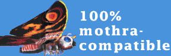

Jason123Santa's website
This is my website that me Jason123santa made. I like linux and open sourced things. You might know me from my other names like jason123, JasonSanta or jason123santa
This is my blog where I write things I want to write about.
- Backend Packages and Frontend Packages by Jason on April 6, 2021
- Switched to Linux Mint by Jason on March 8, 2021
- Applications that I use on my pinephone by Jason on February 20, 2021
- Starting the 100 Days to Offload Challenge by Jason on February 16, 2021
Old posts are in the Archive.
RSS is in the RSS.
Links to varius platforms you can follow me on:



This webiste was made with bloop.